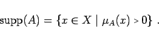
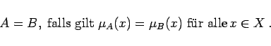
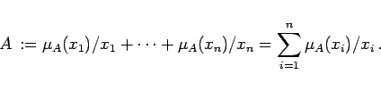

Inhalt Index DeskTop Bronstein

 Algebra und Diskrete Mathematik Fuzzy-Logik Grundlagen der Fuzzy-Logik Interpretation von Fuzzy-Mengen (Unscharfe Mengen)
Algebra und Diskrete Mathematik Fuzzy-Logik Grundlagen der Fuzzy-Logik Interpretation von Fuzzy-Mengen (Unscharfe Mengen)


Aus der Definition ergeben sich unmittelbar die folgenden Eigenschaften:
|  | (5.352) |
|  | (5.353) |
Man schreibt dafür auch
|  | (5.354) |
In dieser Definition sind Bruchstriche und Summenzeichen rein symbolisch zu verstehen.